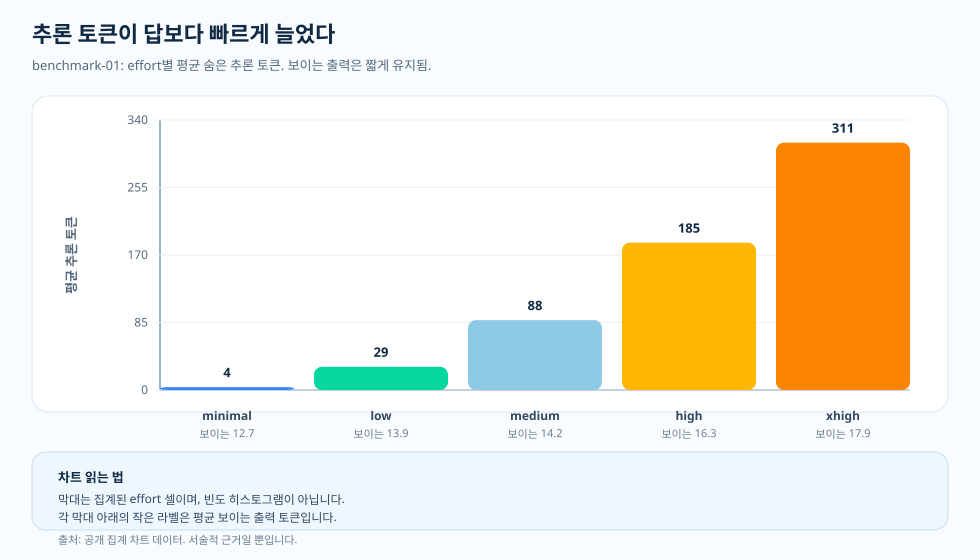

주제 글 · 보이지 않는 과금 구조
보이지 않는 추론 토큰: 답변에는 보이지 않는 청구서의 몫
추론 마이그레이션을 마치거나 누군가 추론 강도 손잡이를 한 단계 올린 뒤에도 답변은 여전히 짧고 평범해 보일 수 있습니다. 눈에 보이는 텍스트만으로는 비용이 더 든다는 사실을 알기 어렵습니다. 그런데 같은 워크로드인데도 재무와 텔레메트리에는 더 큰 청구서가 잡힙니다. 답변이 길어지지 않았다면 그 비용은 어디로 갔을까요?
왜 이것을 검증했나
거의 모든 팀이 비슷하게 가늠합니다. 요청 하나의 비용을 생각할 때 먼저 보는 것은 답변의 길이입니다. 짧은 답은 싸고 긴 답은 비싸다고 느낍니다. 추론 모델이 나오기 전에는 이 직감이 실무에 쓸 만큼은 맞았습니다.
확인할 질문은 분명합니다. 보이는 답변 길이가 지출을 설명하고 더 큰 청구서는 미처 알아채지 못한 조금 더 긴 답변에서 비롯됐을 수 있습니다. 반대로 추론 모델에서는 사용자가 끝내 읽지 않는 숨은 추론 토큰에서 비용이 발생했을 수도 있습니다. 차트에서 어느 쪽이 변했는지 확인합니다.
과금되는 각 요청을 입력, 캐시된 입력, 보이는 출력, 숨은 추론으로 나누고 이 구성을 비용, 품질, 지연 시간과 함께 읽었습니다. 먼저 짧은 사실형 구간을 보고 다단계 구간과 비교했습니다. 두 구간은 뚜렷이 달랐습니다. 짧은 사실형 작업에서는 숨은 추론 토큰이 거의 발생하지 않았습니다. 보이는 출력은 강도 사다리 전체에서 약 14.0에서 14.8 토큰으로만 늘었고 숨은 추론은 none의 0에서 시작해 정점에서도 한 토큰 미만에 가까운 0 수준에 머물렀습니다. 그래서 요청당 청구서도 평평했습니다. 숨은 추론 토큰은 작업이 다단계 해결을 요구할 때에만 늘었고 그때는 요청당 약 110개까지 올라갔습니다. 아래 한 장 요약에서 이 대비를 살펴본 뒤, 이어지는 절에서 측정값을 자세히 설명합니다.

질문
답변 텍스트가 짧게 유지되었다면, 추가 비용은 도대체 어디에서 나온 것일까요?
근거
benchmark-01과 benchmark-02의 토큰 구성을 비용, 품질, 지연 시간과 나란히 하나의 근거 사슬로 읽습니다.
발견
짧은 사실형 작업에서는 숨은 추론 토큰이 0에 가까워 청구서가 평평했고 다단계 작업에서는 요청당 0에서 약 110 토큰까지 커졌습니다.
결정
보이는 답변이 짧더라도 추론 토큰을 텔레메트리에서 추적합니다. 숨은 토큰 예산도 응답에 드러나지 않는 청구서의 일부로 봅니다.

숨은 추론 토큰이 없을 때와 늘어날 때
benchmark-01에서 눈여겨볼 점은 무엇이 일어나지 않았는가입니다. 강도 손잡이를 올려도 숨은 예산은 늘지 않았습니다. none은 평균 약 14.0 보이는 출력 토큰과 0 추론 토큰이었습니다. xhigh는 평균 약 14.8 보이는 출력 토큰과 여전히 한 토큰 미만의 추론 토큰이었습니다. 숨은 추론 토큰은 거의 없었고 청구서는 평평했으며 모든 gpt-5.2 셀은 gpt-4o 기준선 이하에 머물렀습니다. 짧은 사실형 답에서는 모델이 숙고할 일이 없었던 셈입니다.
다단계 구간에서는 같은 분해의 결과가 정반대였습니다. 숨은 추론은 none의 0 토큰에서 xhigh의 약 110 토큰으로 올라갔고 보이는 출력도 약 6에서 117 토큰으로 함께 늘었습니다. 독자가 보는 텍스트만으로는 실제 계산량을 제대로 가늠할 수 없습니다. 늘어난 작업의 상당 부분이 답변에 드러나지 않기 때문입니다. 짧은 답이 반드시 싼 것이 아니며 숨은 예산이 쓰이는지는 토큰 분해로만 알 수 있습니다.
차트를 읽는 법
막대는 개별 요청의 히스토그램이 아니라 강도 셀별 집계값입니다. X축은 추론 강도 설정이고 Y축은 요청당 평균 추론 토큰입니다. 각 막대 아래의 작은 라벨은 같은 셀의 평균 보이는 출력 토큰 수입니다.
차트는 아래에서 위로 읽습니다. 먼저 보이는 출력이 청구서를 설명할 만큼 바뀌었는지 묻고 그다음 숨은 추론 막대와 비교합니다. 짧은 사실형 control에서는 두 막대가 모두 낮게 머물기 때문에 평평한 청구서에 숨은 설명이 필요 없습니다. 다단계 구간에서는 숨은 막대가 올라갑니다.
원천 차트로 확인하는 내용
토큰 구성은 메커니즘을 설명하지만 그것만으로는 충분하지 않습니다. 비용 차트에서는 청구서가 달라졌는지, 품질 차트에서는 그 지출로 답이 나아졌는지 확인합니다. 지연 시간 차트에서는 사용자가 체감하는 대기 시간을 확인합니다. 세 차트를 함께 보면 숨은 과금 구조가 드러납니다. 짧은 사실형 control에서는 내부 토큰, 지출, 품질이 모두 평평하고 다단계 작업에서는 내부 토큰이 청구서를 바꿉니다.
이 결과가 뜻하는 것
추론 토큰 자체가 나쁜 것은 아닙니다. 그 토큰이야말로 추론 모델의 존재 이유입니다. 다만 그 토큰을 쓸 만한 작업이 있어야 합니다. 과제가 짧은 사실형 답변만 필요로 한다면 내부 추론은 눈에 띄지 않는 예산 누수가 될 수 있습니다. 반대로 여러 단계의 해결이 필요하다면 그 토큰이 품질을 높이는 핵심일 수 있습니다.
개요 글이 비용·품질·지연 시간·토큰 구성을 한자리에 묶어 두는 이유가 여기에 있습니다. 청구서는 답변 안에 온전히 드러나지 않습니다.
근거 표
docs/blog/data/chart-data/token-composition/benchmark-01/tokens.json에서 나오며 근거 대시보드에서 읽으세요 (제공되는 차트 데이터).
| 근거 항목 | 측정값 A | 측정값 B | 더해 주는 것 |
|---|---|---|---|
| benchmark-01 none | 14.0 보이는 출력 토큰 | 0 추론 토큰 | 짧은 답변이며 숨은 추론 토큰은 없습니다. |
| benchmark-01 xhigh | 14.8 보이는 출력 토큰 | 추론 토큰 1 미만 | 여전히 짧고 여전히 숨은 예산이 없습니다 — 그래서 청구서는 평평했습니다. |
| benchmark-02 none | 5.75 보이는 출력 토큰 | 0 추론 토큰 | 다단계 작업이지만 none에서는 숨은 추론 토큰이 아직 없습니다. |
| benchmark-02 xhigh | 117.3 보이는 출력 토큰 | 109.6 추론 토큰 | 숨은 추론 토큰이 늘어 내부 작업이 보이는 답변에 거의 맞먹습니다. |
출처와 근거 경계
위의 모든 수치는 이 저장소의 공개 산출물에서 확인할 수 있으며 모든 비용 수치는 날짜가 박힌 가격 스냅샷을 기준으로 계산됩니다. 추론 토큰 예산을 텔레메트리에서 계속 확인해야 한다는 회계 원칙은 이 글에서 제시한 운영 관점의 해석입니다. 아래 두 계층은 문서화된 입력이 끝나고 추론이 시작되는 경계를 표시합니다.
- [1] Tier 1 — 방법론 계약: 이 저장소,
docs/05-methodology.md(v1.0). 셀당 N = 20 작성 표본, R = 3 반복, 공개 집계 구간만 해당합니다. 차트 해석 본문은 이 고정된 입장을 전제하며 오차 막대는 신뢰 구간이 아니라 표준편차이고 N = 20에서 p-값은 주장하지 않습니다. - [2] Tier 1 — PAYG 가격 스냅샷: 요청당 비용 관점은 이 저장소의
pricing/azure-openai-payg-2026-05.yaml를 기준으로 가격을 매깁니다. 2026-05-19 접근: Azure OpenAI 가격 페이지; 아카이브. 정가가 바뀌면 숨은 토큰 청구서도 달라집니다. - [3] Tier 2 — benchmark-01 구간 측정(control): 이 저장소,
benchmarks/01-short-factual/analysis.json. 숨은 토큰이 평평하다는 근거입니다 — 추론 토큰은 medium까지 0에 머물고 정점도 약 1.35이며 보이는 출력은 14.0에서 14.8로만 늘었습니다 — 그래서 이 구간에서 요청당 청구액이 달라지지 않았습니다. - [4] Tier 2 — 렌더링된 차트 데이터(control): 이 저장소,
docs/blog/data/chart-data/token-composition/benchmark-01/tokens.json이 토큰 분해의 출처입니다.docs/blog/data/chart-data/cost-curves-effort/benchmark-01/cost-per-request.json,quality.json,latency.json과 함께 읽으면 숨은 추론 토큰, 청구액, 대기 시간이 모두 평평했다는 짝지은 근거가 됩니다. - [5] Tier 2 — 다단계 측정(positive case): 이 저장소,
docs/blog/data/chart-data/token-composition/benchmark-02/tokens.json. 안내 차트에 나타난 상승의 출처입니다 — 숨은 추론은 강도 사다리에서 0, 17.433333, 32.0, 43.55, 109.55로 오르고 보이는 출력은 5.75에서 117.266667로 오릅니다. 답변에 드러나지 않는 청구액이 실제로 늘어나는 구간입니다. - [6] 근거 대시보드: 렌더링된 benchmark-01 및 benchmark-02 토큰 구성 차트가 같은 산출물의 감사 가능한 형태입니다.
이 근거에 따르면 숨은 추론 토큰의 양은 작업에 따라 다릅니다 — 짧은 사실형 control에서는 0에 가깝고 다단계 구간에서는 보이는 출력에 거의 맞먹을 만큼 올라갑니다. 도구 에이전트나 종합 작업에서도 같은 형태라고 증명하지는 않습니다. 각 주제에는 별도의 측정이 필요합니다. 중요한 것은 크기가 아니라 측정 습관입니다. 현재 작업이 어느 경우에 해당하는지는 토큰 분해로 확인합니다.
실무 규칙
- 추론 토큰을 총 토큰만이 아니라 요청별로 보이는 출력 옆에 함께 기록하세요.
- 짧은 답변도 큰 내부 비용을 품을 수 있으니, 숨은 토큰 예산에 알림을 거세요.
- 이 워크로드 형태에서 짝지은 품질 차트로 개선을 확인한 뒤에만 더 높은 강도를 승격하세요.
보이는 답변이 짧더라도 추론 토큰을 텔레메트리에서 측정하세요. 숨은 토큰 예산은 응답에 드러나지 않는 청구서의 일부입니다.
다음: 다단계 작업: 추론이 시험해 볼 가치를 얻을 때 — 추가 추론은 언제 더 큰 청구서가 아니라 품질 향상으로 이어질까요?